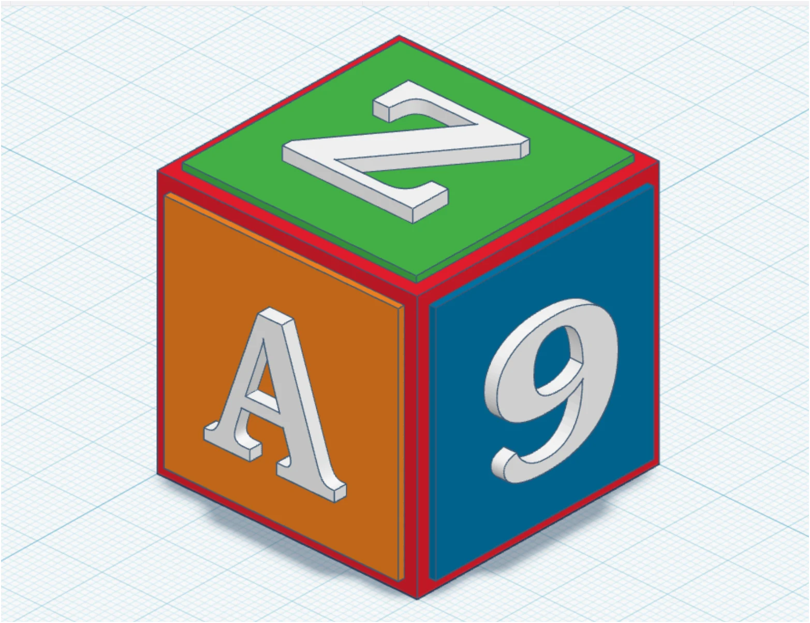

جسم المكعّب
الأبعاد بالملّيمتر. اختر لونًا مناسبًا للجسم.
نشاط عملي · تكنولوجيا الصف التاسع
أنت المصمّم! حوّل مكعّبًا بسيطًا إلى تصميم ثلاثي الأبعاد يحمل حرف اسمك وصفّك وشعبتك، بألوان تختارها بنفسك.

قبل أن تبدأ
ادخل إلى حسابك في صف Tinkercad، وأنشئ تصميمًا جديدًا باسمك وشعبتك، مثل: أحمد — التاسع ب — مكعّبي الهندسي.
الأبعاد بالملّيمتر. اختر لونًا مناسبًا للجسم.
لوحة علوية ولوحتان جانبيتان، وإطار بعرض 2 ملم من كل جانب.
حرف اسمك بالإنجليزية، والرقم 9، وحرف شعبتك بالإنجليزية.
انتبه: قياس 40 × 40 × 40 ملم يخص جسم المكعب الأساسي؛ الألواح والكتابة تبرز خارجه.
من الشكل الأساسي إلى هويّتك
شاهد المقاطع بالترتيب من 01 إلى 04. أوقف الفيديو عند كل خطوة وطبّقها على مشروعك، ثم تابع. يمكنك تكبير الفيديو لقراءة القياسات بوضوح.
أضف شكل الصندوق، وأدخل الطول والعرض والارتفاع: 40 ملم لكل منها. اختر اللون، واضبط موقع الجسم بالمسطرة عند نقطة الأصل.
تحقّق: الأبعاد الثلاثة متساوية وقاعدة المكعب على الشبكة.
أضف صندوقًا رقيقًا بأبعاد 36 × 36 × 1 ملم. اجعل ارتفاع قاعدته 40 ملم، وبُعد حافته عن الأصل 2 ملم في اتجاهَي الطول والعرض.
تحقّق: اللوحة تلامس أعلى المكعب ويظهر حولها إطار متساوٍ.
استخدم Duplicate لنسخ اللوحة، ثم دوّر النسخة لتصبح واقفة على وجه جانبي. أنشئ اللوحة الثالثة واضبط اتجاهها وموقعها على الوجه الآخر، واختر لونًا مختلفًا لكل لوحة.
تحقّق: الألواح الثلاثة متساوية، والسُمك 1 ملم، والإطار 2 ملم.
اسحب شكل النص إلى سطح اللوحة، وأدخل الكتابة المطلوبة. اضبط مساحة الحرف أو الرقم على 20 × 20 ملم وسُمكه على 2 ملم، ثم اضبط موقعه بالمسطرة وفق الجدول أدناه.
تحقّق: الكتابة واضحة، في الاتجاه الصحيح، وملامسة للّوحات وكاملة داخل حدودها.
الدقّة تصنع الفرق
الأرقام ذات الخلفية الزرقاءأبعاد المجسّم: الطول والعرض والارتفاع.
الأرقام ذات الخلفية الخضراءبُعد حافة المجسّم عن نقطة أصل المسطرة.
القيم التالية تعتمد على المسطرة عند حافة المكعب، وجسم المكعب عند (0، 0، 0)، كما في بداية النشاط. الموقع يُقاس من حافة العنصر، والارتفاع هو ارتفاع قاعدته عن الشبكة.
| العنصر | الأبعاد (ملم) | الموقع (ملم) |
|---|---|---|
| جسم المكعب | 40 × 40 × 40 | 0، 0، 0 |
| اللوحة العلوية | 36 × 36 × 1 | 2، 2، 40 |
| لوحة الرقم 9 | 36 × 1 × 36 | 2، 40، 2 |
| لوحة حرف الشعبة | 1 × 36 × 36 | 40، 2، 2 |
| حرف الاسم في الأعلى | 20 × 20 × 2 | 10، 10، 41 |
| الرقم 9 | 20 × 2 × 20 | 10، 41، 10 |
| حرف الشعبة | 2 × 20 × 20 | 41، 10، 10 |
لماذا 41؟ لأن 40 + 1 = 41: بُعد جسم المكعب مضافًا إليه سُمك اللوحة. ولماذا 10؟ لأن (40 − 20) ÷ 2 = 10؛ وبذلك تتوسط الكتابة الوجه، وتبعد 8 ملم عن حواف اللوحة.
انظر إلى تصميمك من كل جهة
افحص التصميم من الأعلى والأمام والجانب، ثم علّم على البنود التي أنجزتها.
أنجز العمل داخل حسابك في صف Tinkercad ليتمكّن المعلم من متابعته. قائمة المراجعة هنا لمساعدتك على التحقّق من تصميمك.
بعد إكمال النشاط، تكون قد حوّلت القياسات إلى مجسّم يحمل هويّتك. واصل التجربة والإبداع.